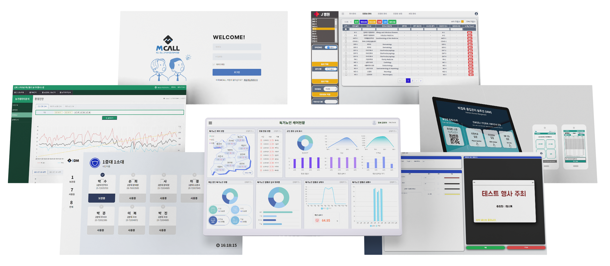

HUCLO AI-X PLATFORM
휴클로 AI-X 플랫폼

클라우드 SaaS기반 지능형 통합관제 플랫폼

- 3P(인원출입, 재고관리, 콘텐츠관리) 핵심자원별 DX 특화관리 솔루션
- QR코드기반 맞춤형 관리체계를 통한 사용자 편의성, 효율성 증대
- 다양한 스마트산업(팩토리, 팜, 국방, 스토어 등)에 맞는 커스텀 및 특화기능
- 다양한 Device 및 OS환경에 적용가능한 반응형 웹 및 운영기술
- AI기술(비전, 시계열, 자연어 등)을 통한 최적화, 지능화, 무인화 솔루션 제공
- BIGDATA를 통한 디스패칭, FIFO, 트랜드분석, 시각화 등 효율적 의사결정
- 자체 빅데이터 분석 플랫폼 및 다양한 분석 레퍼런스 보유
- AI, 데이터바우처 공급기업 다수 수행, T3우수기술기업 인증
- SaaS화 및 API모듈화로 범용성 및 확장성 제공
- 다양한 클라우드 환경에 적용 가능한 범용 플랫폼 구성
- 클라우드 확인제를 통한 사용자 맞춤형 인프라 및 서비스 제공
- On-demand Self Service, Multi Tenancy구조 등 사용자 중심 설계
HUCLO PEOPLE
HUCLO PROJECTION
HUCLO PRODUCT
HUCLO AI-X
PLATFORM
인적, 물적, 콘텐츠 자원을 휴클로 하나로 통합관제하여 궁극적인 AI-X기술을 실현
HUCLO의 기술로 여는 새로운 디지털 트랜스포메이션